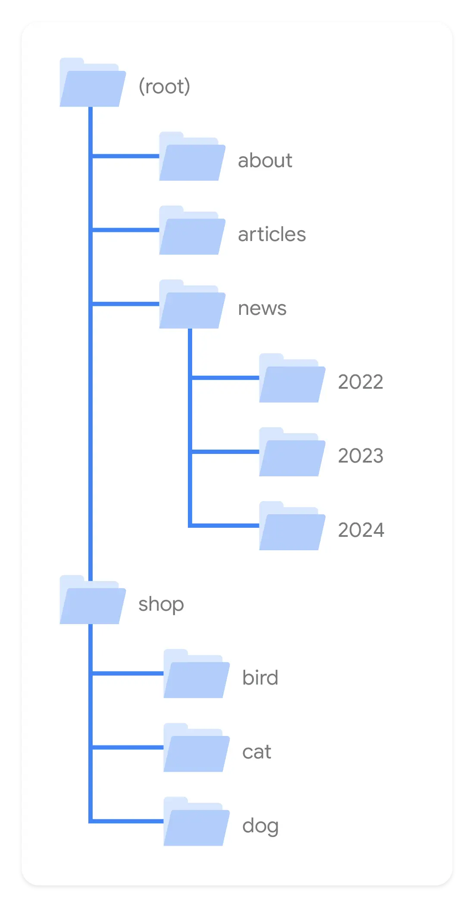

短答
可理解的目录、真实的链接，以及与页面匹配的标题，是爬虫和人绘制站点的方式。
目录插图显示的是分组：产品在产品路径下，文档在自己的路径下，而不是一堆生成的 ID。这些组之间的链接应该是带词语的锚点。title 元素应该与 H1 一致。这些是 SEO 健康检查。它们不分配重要性分数。
定义
同一份公开指南里的另一张图把链接文字显示为锚点的可见部分，还有一张显示 HTML 里和页面上的标题。本文使用目录图，并陈述配套的想法，而不假装三张截图是三个案例。每个 URL 的标题都只是品牌名，会使地图失效。
结构如何承载发现
把重要模板放在稳定路径中，用描述性锚点链接它们，并使 title 与 H1 一致。
以后更改目录意味着从旧路径做重定向。在一千个 URL 存在之前做架构决定更便宜，但之后的健康检查是一样的：一跳到新的规范路径，更新内链，更新 sitemap。与 H1 不一致的标题改写，是这次搬迁之上的页面基础缺陷。

要检查什么
- 重要模板位于可理解的路径
- 这些组之间的描述性锚点
- title 元素与 H1 对齐
- 路径变化时的重定向
- 一条产品 URL 和一条文档 URL
一个结构示例
手册位于 /download?id=441，产品位于 /products/valve。手册的 title 元素是公司名。修复是给手册一个稳定路径、一个等于 H1 的标题，以及从产品页出发的描述性链接。id URL 做重定向。这份清单里没有增长预测。
它不声称什么
清楚的目录和标题不保证排名或引用。
Mika Visibility 把它归到哪里
Mika Visibility 把架构读成 SEO 健康：重要模板是否位于爬虫能从枢纽跟着走的路径上。深度和孤立页是结构。没被回答的买家问题是 SEO 增长。整齐的树不能保证页面容易被引用，那是 GEO 的质量，不是引用承诺。
目录图显示分组。链接文字和标题是同一份来源指南中的配套检查。
常见问题
什么为爬虫绘制站点？
可理解的目录、真实的链接，以及与页面匹配的标题，是爬虫和人绘制站点的方式。
标题应该匹配什么？
把重要模板放在稳定路径中，用描述性锚点链接它们，并使 title 与 H1 一致。
清楚的目录能保证排名吗？
清楚的目录和标题不保证排名或引用。
下一步
做一次结构化的 SEO + GEO 审计，查看健康发现、增长缺口和可以执行的蓝图。
更清晰的实体、答案、证据和上下文，会让页面更容易被理解与引用。任何回答产品中的结果都不作保证。